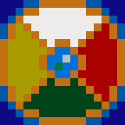

<!DOCTYPE html>
<html lang="en-US">
<head><head>
	<script src="https://code.jquery.com/jquery-3.3.1.min.js"></script>
	<script src="https://cdn.jsdelivr.net/npm/jquery.terminal/js/jquery.terminal.min.js"></script>
	<meta charset="utf-8">
	<meta name="viewport" content="width=device-width, initial-scale=1">
	<title> TWErminal </title>
	<link rel="stylesheet" href="https://cdn.jsdelivr.net/npm/jquery.terminal/css/jquery.terminal.min.css"/>
	<link rel="icon" type="image/x-icon" href="images/TWEbsiteFavicon.png">


</head>

<body>


	<script>
	$('body').terminal({
	    hello: function(name) {
	        this.echo('Hello, ' + name +
	                  '. Welcome to TWErminal.');
	    },
	    mara: function() {
	    	this.echo('\n\n ------------------------<==============>--<==============>------------------------\n\n');
	    	this.echo("Mara Ostren, one of two women currently serving as chieftains of the the Kun'Achi tribe. Rules on the island of Chet'Tun. ")
	    	this.echo("\nRelated Terms: chettun, deyli, kunachi, elethwyn, sybil, sorcha, eli, elin, dab")
	    	this.echo('\n\n ------------------------<==============>--<==============>------------------------\n\n');
	    },
	    picture: function() {
	    	this.echo('\n\n ------------------------<==============>--<==============>------------------------\n\n');
	    	this.echo($(''));
	    	this.echo('\n\n ------------------------<==============>--<==============>------------------------\n\n');
	    },
	    guidelines: function() {
	    	this.echo("\n\n ------------------------<==============>--<==============>------------------------\n\nIn order to operate TWErminal, please abide by the following guidelines:\n\n TWErminal welcomes all your prompts, and will do his best to inform you about whatever you prompt him with. \n\n TWErminal is eager to serve, but easier to be confused. Please use only a single word at a time when prompting him. \n\n Please refrain from using any capital letters in your prompts. \n\n If you ever want to see these guidelines again, please prompt TWErminal with 'guidelines'\n\n ------------------------<==============>--<==============>------------------------\n\n\n\n");
	    },
	    chettun: function() {
	    	this.echo('\n\n ------------------------<==============>--<==============>------------------------\n\n');
	    	this.echo("The one island left in the inner sea of TWE. This island was once one of many, but the Great Calamity on the 88th of Winter in the year 4358. It was spared by the god of the sea, Ocean himself. A schism arose in the Kun'Achi tribe at this time, with the eastern half of the tribe increasing their worship of the deity around his seat of power and the western half rebelling against him and seeking to dethrone him. The eastern portion of the tribe became known as the Kun'Haman, and the western portion took the name Harachi.")
	    	this.echo("UPDATE: After 100 years of war, Mara Ostren of the Harachi joined forces with Deyli Lonen of the Kun'Hamans to dethrone Ocean and bring peace to the island. This would have been impossible if it weren't for the support of Sorcha Nikandros, Sybil Cerelia, Eli Brangan, and Dab Oss. The newly reunited Kun'Achi tribe refers to itself as 'the masters of the sea' and boast the most comprehensive sailing knowledge and shipwright skills in TWE. Hydrokineticists can be found in this tribe.")
	    	this.echo("The island itself is pretty large, boasting smaller islands toward the west, a mountain range that spans its upper regions, a frosty peak, and lush jungles that reach to sandy shores. The shrine of Ocean sits in the east, though it has been toppled and Ocean no longer reigns there.")
	    	this.echo("\nRelated Terms: chet'tun, deyli, kun'achi, elethwyn, sybil, sorcha, eli, elin, dab")
	    	this.echo('\n\n ------------------------<==============>--<==============>------------------------\n\n');
	    },

	}, {
	    greetings: "TWErminal greets you. \n\n ------------------------<==============>--<==============>------------------------\n\nIn order to operate TWErminal, please abide by the following guidelines:\n\n TWErminal welcomes all your prompts, and will do his best to inform you about whatever you prompt him with. \n\n TWErminal is eager to serve, but easier to be confused. Please use only a single word at a time when prompting him. \n\n Please refrain from using any capital letters in your prompts. \n\n If you ever want to see these guidelines again, please prompt TWErminal with 'guidelines'\n\n ------------------------<==============>--<==============>------------------------\n\n\n\n",
	    prompt: '??> '
	});
	</script>


</body>
</html>